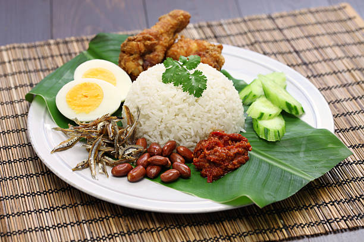

5 MUST TRY Malaysia Dishes
Malaysian Cuisine is well-known for its diversity, complexity and rich of vibrant flavours, which is influences across Malays, Chinese and Indian culinary traditions. Let us explore some of the many must-try Malaysian food together.
-
Nasi Lemak

Nasi Lemak which is considered as the national dish of Malaysia is a traditional Malay dish. The rice is cooked in coconut milk and pandan leaves making it fragrant and served with peanuts, hard-boiled egg, cucmber slices and sambal. You may also pair it up with other accompaniments such as fried chicken, fried fish, or beef rendang.
-
Roti Canai
Roti Canai is often rated as the best Mamak breakfast among Malaysian. It is a flatbread which is greatly influence by the local Indian community. It is characterized by a crispy exterior and chewy interior and are normally served with curry as dipping. Roti Canai was recognized by Taste Atlas as the best bread in the world, so you must definitely try it whenever you visit Malaysia.
-
Satay

Satay is also another popular Malaysia dish which is a meat skewer, normally it consist of chicken, beef or lamb that are being cut into small cubes and threaded onto bamboo skewers and grilled. It is well-known for its smoky flavor and caramelized marinade after the grilling and it is served with cucmber slices, onion slices and peanut sauce for dipping.
-
Ais Kacang
Ais Kacang also known as Air Batu Campur (ABC) is a popular Malaysian cold dessert which is well-known for its refreshing and colorful mix of ingredients. This dessert is served as shaved ice topped with various sweet ingredients and syrups. It is particularly enjoyed in the hot, tropical climate of Malaysia as a cooling treat.
-
Roti John
Roti John is a popular bazaar food, it is a type of sandwich which consist of handful of ingredients such as beaten eggs which is poured over the mixture of seasoned minced meat cooked together with chopped onions. Before serving, it is dressed with various sauces to further enhance it's flavour.